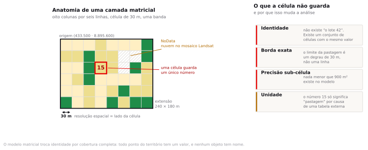
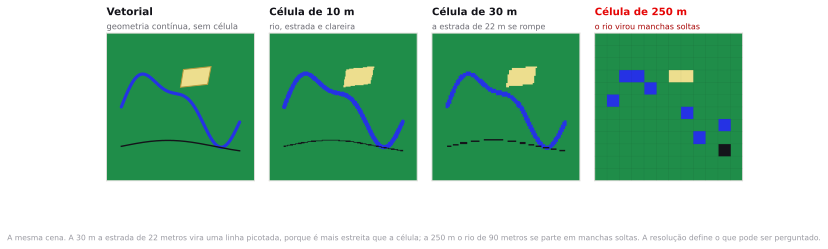
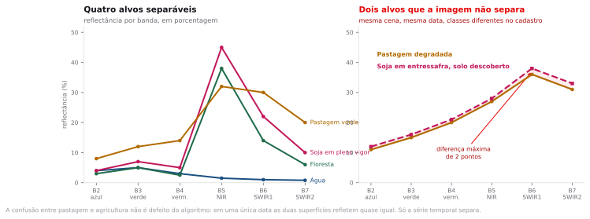
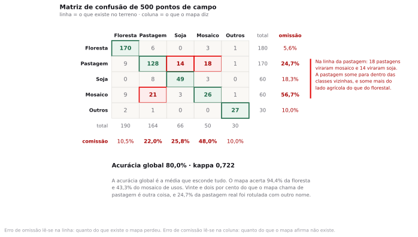
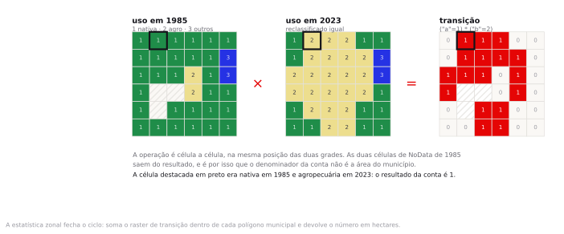

Este tema não foi trabalhado em sala. A página reúne só a parte teórica, como material de apoio para os grupos cujo projeto final envolva dados raster, uso e cobertura da terra ou sensoriamento remoto. O roteiro no QGIS, o exercício e o pacote de dados foram retirados.
Modelo matricial e sensoriamento remoto
Um satélite não vê rios, lotes ou pastagens. Ele mede quanta energia chega ao sensor em cada pedacinho quadrado do terreno, e grava um número. O mapa de uso da terra que você vai abrir daqui a pouco é uma grade de seis milhões e meio desses números, e cada um deles é o resultado de uma decisão que alguém tomou.
No modelo vetorial, a unidade é a feição: um polígono tem vértices, área, identidade e uma linha na tabela de atributos. No modelo matricial, a unidade é a célula: um quadrado de tamanho fixo que cobre uma posição do território e guarda um valor. Não existe tabela de atributos: existe a grade, e uma legenda que diz o que cada valor significa.

Os cinco termos
A célula é o quadrado elementar. A resolução espacial é o lado da célula no terreno, 30 metros no MapBiomas. A extensão é o retângulo que a grade cobre, dado pelas coordenadas dos cantos. A banda é uma grade completa de valores: uma imagem de satélite tem várias, um mapa de uso da terra costuma ter uma. E o valor é o número gravado na célula, que pode ser uma medida física, como reflectância, ou um código de classe, como 15 para pastagem.
Uma célula de 30 metros cobre 900 metros quadrados, ou 0,09 hectare. Esse número aparece o tempo todo, porque é o fator de conversão entre contagem de células e área. Somar 1.223.499 células e multiplicar por 0,09 é literalmente como se mede desmatamento no Brasil.
Duas consequências mudam o jeito de pensar. A primeira: nada menor que a célula existe. Uma estrada de 6 metros de largura não aparece em uma grade de 30 metros, não porque o satélite não a viu, mas porque a célula que a contém é majoritariamente outra coisa. A segunda: não há borda. O limite entre pastagem e floresta é uma escada de quadrados de 30 metros, e a suavidade que você vê na tela é interpolação do programa de desenho.
Resolução espacial, temporal e espectral
Resolução espacial é o lado da célula. Mas há outras duas que costumam ser confundidas com ela, e a diferença entre as três decide o que a sua análise consegue afirmar.
| Resolução | O que mede | O que ela limita |
|---|---|---|
| Espacial | O lado da célula no terreno | O menor objeto detectável. Landsat entrega 30 m, Sentinel-2 entrega 10 m, MODIS entrega 250 m. |
| Temporal | De quanto em quanto tempo o satélite revisita o mesmo ponto | A menor mudança detectável no tempo. Landsat volta a cada 16 dias, Sentinel-2 a cada 5, MODIS todo dia. |
| Espectral | Quantas faixas do espectro o sensor mede, e quão estreitas | Quais materiais podem ser distinguidos entre si. |

Com célula de 30 metros, qual é a menor área desmatada que você consegue detectar com alguma confiança?
Uma célula isolada, 0,09 hectare, é ruído: pode ser uma clareira, pode ser sombra de nuvem, pode ser erro de classificação. Os sistemas oficiais adotam uma área mínima de mapeamento justamente para não contar esse ruído. O PRODES, do INPE, só considera polígonos de desmatamento a partir de 6,25 hectares, o equivalente a cerca de 70 células. Abaixo disso, o valor gravado na célula não permite distinguir mudança real de ruído de classificação.
NoData e o efeito sobre as médias
Uma grade cobre sempre um retângulo, e o território raramente tem essa forma. Sempre sobram células que não têm valor: fora da área imageada, sob nuvem, sob sombra de nuvem, com falha do sensor. Essas células recebem um valor especial, o NoData, que é um número comum, escolhido para significar "aqui não há informação". No raster de Cacaulândia usado como exemplo, o NoData é 0.
O problema é que 0 é um número. Se alguma ferramenta ignorar a declaração de NoData e tratar aquele 0 como valor, ele entra na conta. Uma média que deveria ser 27 vira 19 porque um terço das células valia zero por convenção. Isso não gera erro, não gera aviso e não muda nada visível na tela.
O caso mais frequente na prática não é esse, e é pior: o NoData está declarado corretamente e a ferramenta o ignora do jeito certo, mas o denominador da sua conta continua sendo a área total do município. Você divide uma soma calculada sobre 1.866.532 células por uma área que corresponde a 2.144.650 células, e o resultado sai 13% abaixo do verdadeiro. Ninguém percebe, porque o número continua plausível.
É exatamente o que acontece com Monte Negro no raster do exemplo. O mosaico de 1985 tem nuvem sobre 25.030,6 hectares do município, 13,0% da área. A mesma conta, com dois denominadores defensáveis, devolve 46,3% ou 40,3%. Seis pontos percentuais separam os dois, e ambos podem ser publicados sem mentira, desde que se declare qual denominador foi usado.
Nuvem sobre 13,0% do município em 1985. Você reporta a fração convertida sobre a área total ou sobre a área observada?
Sobre a área observada, e diz isso na frase. Reportar sobre a área total afirma implicitamente que nada mudou embaixo da nuvem, o que é uma hipótese e não uma medida. Reportar sobre a área observada afirma que o comportamento embaixo da nuvem é igual ao do resto, o que também é uma hipótese, mas é a hipótese mais fraca das duas. E as duas exigem que a extensão do buraco apareça no relatório.
De onde vem uma classe de uso da terra
Você não precisa saber processar imagem para usar um produto de sensoriamento remoto, mas precisa saber de onde ele vem, senão não sabe onde ele quebra.
Cada material reflete a luz solar de um jeito próprio em cada faixa do espectro. A clorofila absorve muito no vermelho e reflete muito no infravermelho próximo; a água absorve quase tudo no infravermelho; o solo exposto reflete de forma crescente do azul ao infravermelho médio. O perfil de reflectância de um alvo ao longo das bandas é a sua assinatura espectral, e é a matéria-prima de qualquer classificação.
Combinar bandas amplifica contrastes. O índice de vegetação por diferença normalizada, o NDVI, é a razão entre a diferença e a soma do infravermelho próximo com o vermelho. Vegetação vigorosa dá valores altos, próximos de 0,8; solo exposto dá valores baixos; água dá valores negativos. É uma conta de duas bandas que separa surpreendentemente bem o que é verde do que não é.

A saída para o problema da direita não é espacial nem espectral: é temporal. Um talhão de soja fica descoberto em julho e verde em janeiro; uma pastagem degradada fica parecida o ano inteiro. É por isso que o MapBiomas não classifica uma imagem, e sim um mosaico anual construído a partir de dezenas de cenas, com variáveis derivadas da série temporal. E é por isso que a acurácia do produto varia tanto entre biomas: onde a estação seca é longa e a nuvem é rara, a série é limpa; na Amazônia ocidental, não é.
Classificar, e depois desconfiar do resultado
Classificar é atribuir a cada célula um rótulo, a partir dos seus valores nas bandas e das amostras de treinamento que o analista forneceu. Há muitos algoritmos, e a escolha entre eles importa menos do que quase todo curso sugere. O que importa é a etapa seguinte.
Depois de classificar, sorteia-se um conjunto de pontos, visita-se cada um em campo ou em imagem de altíssima resolução, e anota-se o que existe ali de verdade. Cruzando a classe observada com a classe mapeada, monta-se a matriz de confusão. É ela que diz quanto a classificação acerta, classe por classe; sem ela, o mapa é uma afirmação que ninguém verificou.

Omissão e comissão
O erro de omissão mede o que o mapa deixou de fora de uma classe, e se lê na linha da referência. O erro de comissão mede o que o mapa colocou dentro de uma classe indevidamente, e se lê na coluna do mapeado. Uma classe pode ter omissão baixa e comissão alta ao mesmo tempo: é o caso de um mapa que rotula pastagem generosamente, pegando quase toda a pastagem real e mais um bocado de outras coisas junto.
A acurácia global é a soma da diagonal dividida pelo total. Nos 500 pontos de validação do exemplo, ela vale 80,0%. Esse número diz pouco, porque é uma média ponderada pela frequência das classes: como floresta é a classe mais comum e a mais fácil, ela puxa a média para cima e esconde as classes que interessam.
| Classe | Omissão | Comissão | Leitura |
|---|---|---|---|
| Formação florestal | 5,6% | 10,5% | Confiável nas duas direções |
| Soja | 18,3% | 25,8% | Um quarto do que o mapa chama de soja não é soja |
| Pastagem | 24,7% | 22,0% | Um quarto se perde e um quinto é intruso |
| Mosaico de usos | 56,7% | 48,0% | Pior que cara ou coroa em uma das direções |
| Outros | 10,0% | 10,0% | Água e área urbana são fáceis |
Olhe a linha da pastagem na figura 4. Das 170 pastagens de referência, 18 foram mapeadas como mosaico de usos e 14 como soja. Só 9 foram confundidas com floresta. Ou seja: a pastagem some para dentro do lado agrícola da legenda, não para dentro do lado nativo. Isso tem uma consequência direta e pouco intuitiva: se você agrupar pastagem, soja e mosaico em uma única classe "agropecuária", boa parte desse erro se cancela, e a estimativa agregada fica muito melhor do que a de qualquer uma das três isoladamente.
Um produto de sensoriamento remoto declara 80% de acurácia global. Isso é bom?
A pergunta está mal formulada, e é assim que ela chega na sua mesa. Depende da classe que você vai usar e do lado do erro que te machuca. Para um relatório de área florestal, 80% global com 5,6% de omissão na floresta é ótimo. Para embargar uma fazenda por pastagem ilegal, 22% de comissão em pastagem significa que um em cada cinco autos de infração baseados só no mapa cai. O número que importa nunca é o global.
Álgebra de mapas e reclassificação
Como não há tabela de atributos, não há consulta por atributo. A operação equivalente no mundo matricial é a álgebra de mapas: aplicar uma expressão aritmética ou lógica célula a célula, na mesma posição de duas ou mais grades, produzindo uma grade nova.
A regra é rígida e vale a pena decorar: as grades precisam ter a mesma resolução, a mesma extensão e o mesmo sistema de coordenadas. Se não tiverem, o programa reamostra sem perguntar, e reamostrar dado categórico cria nas células de borda valores de classe que não existiam no original.
A reclassificação é o caso mais simples: uma tabela que mapeia intervalos de valor de entrada em valores de saída. É o que transforma as oito classes do produto original nas três categorias com que a sua pergunta trabalha. Essa reclassificação é uma decisão analítica com consequência, não uma formalidade: escolher onde cada classe cai já responde metade da pergunta.

A classe "mosaico de usos" existe porque o classificador não conseguiu separar pastagem de agricultura naquele pedaço. Ao reclassificar, você a coloca em "agropecuária" ou em "outros"?
O MapBiomas a coloca em agropecuária no seu nível 1, e há bom argumento para isso: mosaico de usos é área antropizada, ninguém discute. Mas repare no que a escolha faz com o seu número. Em Cacaulândia, contar o mosaico como agropecuária leva a conversão de 50,7% para 56,5%. Quase seis pontos de diferença saem de uma decisão de legenda, não de uma medição.
Estatística zonal, a ponte de volta
Todo o trabalho até aqui produz grades, e grade não é unidade de gestão: ninguém multa uma célula nem aprova crédito para um pixel. A pergunta é sempre sobre um município, uma fazenda, uma bacia, um assentamento.
A estatística zonal é a operação que fecha o ciclo: recebe um conjunto de polígonos e uma grade, e devolve, para cada polígono, uma estatística das células que caem dentro dele. Contagem, soma, média, mínimo, máximo, desvio-padrão. É a junção entre o mundo matricial e o mundo vetorial, e o resultado volta a ser uma tabela de atributos, com uma linha por polígono.
Qual célula está "dentro" do polígono?
Uma célula de 30 metros na borda do município está parcialmente dentro e parcialmente fora. A convenção usual, e a que o QGIS adota, é incluir a célula quando o seu centro cai dentro do polígono. Isso significa que a área somada pela estatística zonal nunca bate exatamente com a área geométrica do polígono, e a diferença cresce quando o polígono é pequeno ou muito recortado. Em Cacaulândia, o IBGE publica 1.961,778 km², o polígono medido em EPSG:31980 dá 1.960,221 km² e a contagem de células devolve 1.959,961 km². Três números para o mesmo município, e a diferença entre o primeiro e o último é de 0,11%. Para um lote de dois hectares, a mesma convenção pode ser toda a resposta.
Com contagem e soma você chega em qualquer coisa. Se a grade vale 1 onde houve conversão e 0 onde não houve, a soma é o número de células convertidas e a contagem é o número de células válidas. Multiplique a soma por 0,09 e você tem hectares. Divida uma pela outra e você tem a fração. É toda a aritmética da aula.